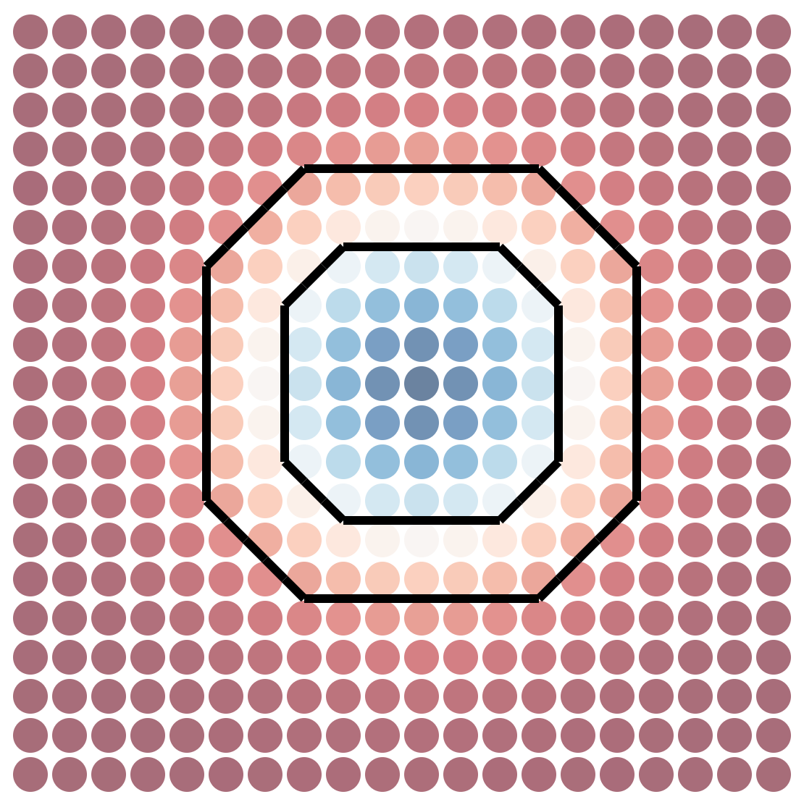
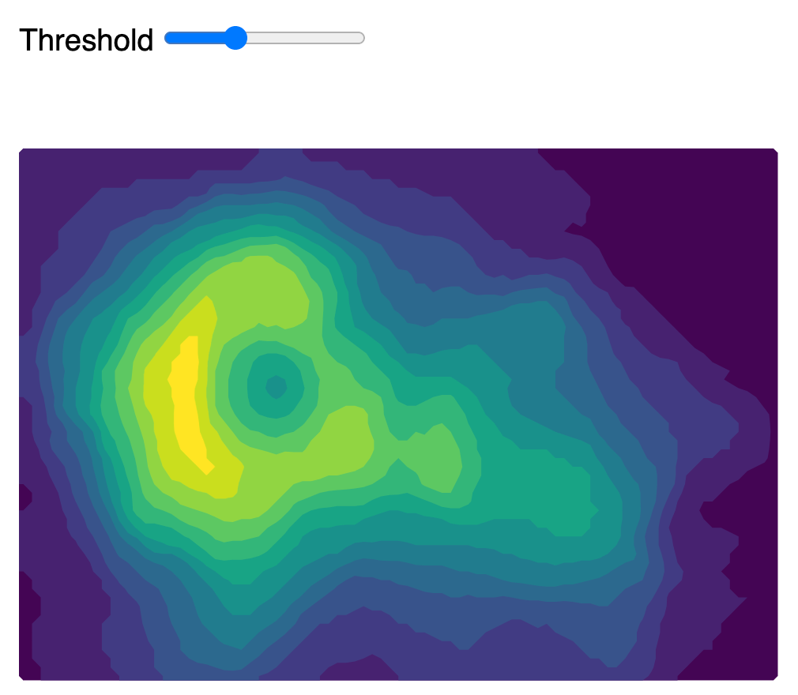
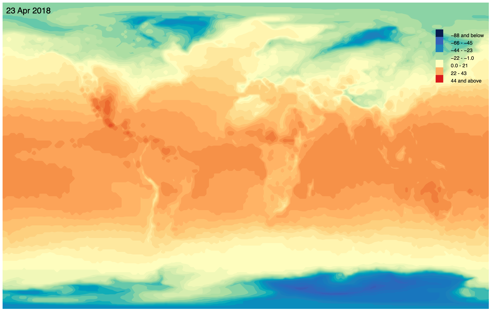
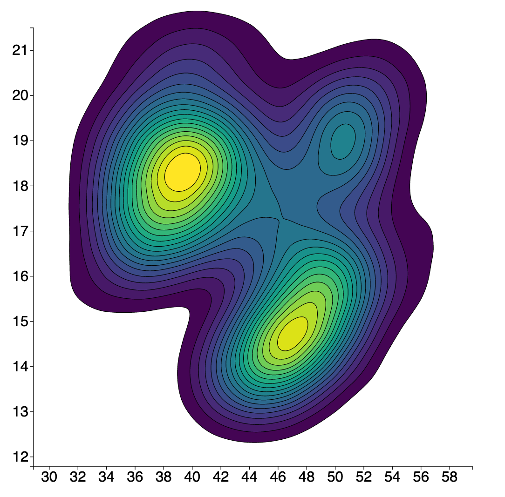

Week-12
Chapter 8 Complementary codes
Spatial Data Visualization
Examples
-
Marching Squares' algorithm implementations

-
Contour lines of 2D data
- Basic contour
- Color coding contours
- Interactive threshold

- Contour lines of Geospatial data (from NOAA database)
- Basic contour map (no basemap)
- Contour map Color coding (no basemap)

- Density based contour map (d3.contourDensity)
- Basic contour
- Color coding density contour map
